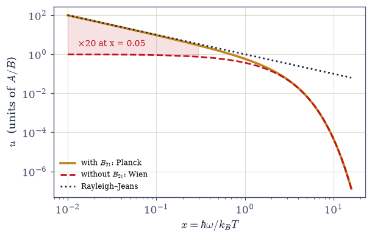
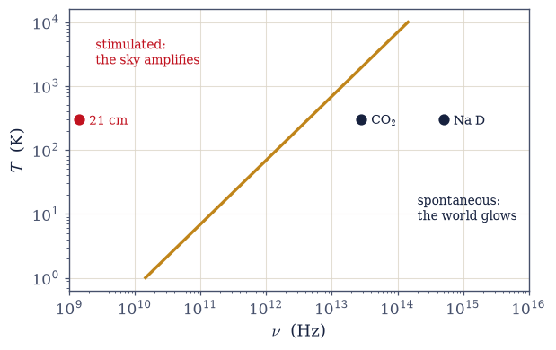
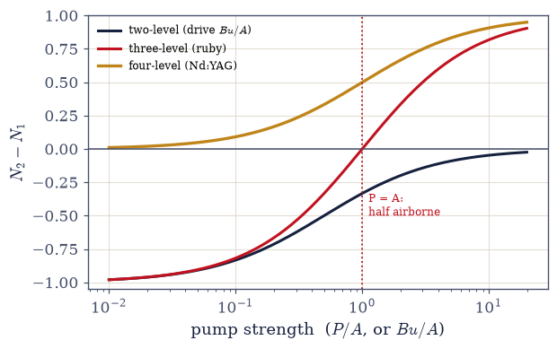
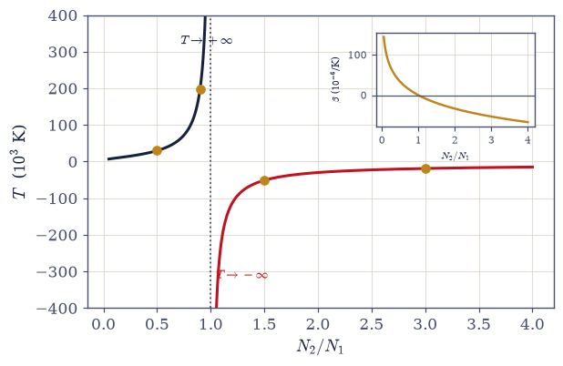
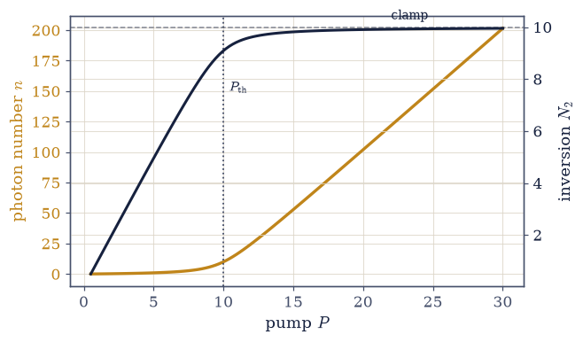

7.15 Einstein’s A and B Coefficients: Thermodynamics Predicts the Laser#
Notebook overview#
§7.14 built the gas; this notebook asks how matter talks to it, and answers with one of the most beautiful arguments in physics: Einstein 1917, run the way it was written: thermodynamics in reverse. Take two-level atoms bathed in radiation and write three rates whose coefficients nobody in 1917 could derive: absorption \(N_1B_{12}u\), stimulated emission \(N_2B_{21}u\), and spontaneous emission \(N_2A\). Demand that the steady state reproduce Planck’s law at every temperature (the law of §7.14 is not negotiable) and the demand does the deriving: \(g_1B_{12} = g_2B_{21}\) (absorption and stimulated emission are one matrix element read in opposite directions) and \(A/B_{21} = \hbar\omega^3/\pi^2c^3\). The teaching move is the counterfactual, with teeth: switch stimulated emission off and the same steady state produces Wien’s exponential, which fails the classical Rayleigh–Jeans limit by a factor of twenty at \(x = 0.05\) (measured below: \(u\cdot x = 0.048\) against Planck’s 0.975). The classical limit itself testifies that emission must be enhanced by the light already present. Einstein predicted a process from thermodynamic consistency in 1917; Maiman built its consequence in 1960.
The forced ratio has a meaning that organizes the whole movement: per atom, stimulated/spontaneous \(= \bar n(\omega, T)\) exactly, so total emission scales as \(\bar n + 1\): the boson enhancement, one family with the bunching variance \(n(1+n)\) of §7.7 and Volume VI’s ladder element \(\sqrt{n+1}\), with QED’s reading of the \(+1\) as stimulation by the vacuum named as the horizon this argument leapfrogged. We quantify the landscape: \(\bar n = 1\) along \(\hbar\omega = k_BT\ln 2\) (4.33 THz at 300 K), sodium’s D line at room temperature sits at \(\bar n \sim 10^{-36}\) (hot matter glows: the optical world belongs to spontaneous emission), while the 21-cm line sits at \(\bar n \approx 4400\) (the radio universe is stimulated, which is why masers preceded lasers). The computational centerpiece is inversion by steady-state rate equations: the two-level no-go (\(N_2/N_1\) saturates at 0.9999 under a \(10^4\times\) drive and never crosses one), ruby’s three-level scheme inverting only when the pump beats \(A\), at which point more than half of all atoms are airborne, and the four-level scheme inverting at any pump whatsoever (\(P/A = 0.01\) verified). The negative-temperature promise of §7.4 is kept here: an inverted pair is a Boltzmann population at \(T < 0\) (\(N_2/N_1 = 1.5\) reads \(-51\,000\) K at the ruby line), and the \(\beta\)-axis picture explains the upside-down ordering. A data exercise decomposes the \(\omega^3\) tyranny honestly, sodium’s 16 ns against the 21-cm line’s eleven million years: 22.3 orders of magnitude, of which the forced \(\omega^3\) law supplies 16.7 and magnetic-dipole forbiddenness the remaining 5.7. The stretch assembles a minimal single-mode laser and watches it snap through threshold: photon number rising linearly above \(P_{\text{th}}\) while the inversion clamps: a nonequilibrium phase transition, named.
Conventions (this notebook). For the structural argument the spectral density \(u\) is measured in units of \(A/B_{21}\) and frequencies in \(x = \hbar\omega/k_BT\); SI units return for the data (cited transition rates: \(A(\text{Na D}) = 6.16\times10^7\) s⁻¹, \(A(\text{21 cm}) = 2.85\times10^{-15}\) s⁻¹ — NIST ASD and Wild 1952 lineage, cited not tuned). Degeneracy factors are kept symbolic through the forced relations and set to \(g_1 = g_2 = 1\) afterwards, where stated. Every \(\bar n\) uses
numpy.expm1; steady states come from flow balance with the conservation row checked explicitly (andnumpy.linalg.solveas the general cross-check); the laser steady state usesscipy.optimize.brentqwith a deliberately asymmetric bracket (stated where used). Level diagrams precede algebra.How to read the checks. Each exercise closes with a
validatecall against an independent fact: the steady-state spectrum solved numerically (brentq on the rate balance) against the analytic Planck form; the counterfactual’s factor-20 failure at small \(x\); the landscape numbers; the two-level saturation ceiling; the closed-form flow balances against the general linear solve at \(10^{-10}\); the negative-temperature ladder; the \(\omega^3\) decomposition against cited data; the threshold kink and clamp. A ✓ is strong evidence; a ✗ is a prompt to locate the discrepancy.Scope. The QED derivation of \(A\) (vacuum fluctuations; the \(+1\) at \(n = 0\)), Rabi oscillations and saturation spectroscopy, and astrophysical masers are named horizons. See Einstein 1917 (“Zur Quantentheorie der Strahlung”); Maiman 1960; Siegman, Lasers; Loudon, The Quantum Theory of Light. Cross-reference §7.14 (the gas; Planck non-negotiable), §7.4 (the Boltzmann ratio, and the negative-temperature seed planted there), §7.7 (the \((n+1)\) family), §6.24 (the golden rule for \(B\), invoked), §7.5 (the oscillator per mode), and forward to §7.16 (phonons) and §7.17 (BEC, where bosonic amplification happens to matter waves).
Theory in brief#
The three rates and the steady state#
Einstein’s 1917 postulates for a two-level atom (\(E_2 - E_1 = \hbar\omega_0\), degeneracies \(g_1, g_2\)) in radiation of spectral density \(u(\omega_0)\):
The honesty note first: in 1917 none of these coefficients was derivable: \(B\) would wait for the golden rule (§6.24), \(A\) for quantum electrodynamics. Einstein simply postulated the forms and let equilibrium do the rest. In the steady state, up-flow equals down-flow, \(N_1B_{12}u = N_2(B_{21}u + A)\), and the populations obey the Boltzmann ratio of §7.4 \(N_2/N_1 = (g_2/g_1)e^{-\hbar\omega_0/k_BT}\). Solving for the spectral density the atoms would enforce:
Planck forces the relations#
This must equal Planck’s law — for every temperature, since the atoms’ level spacing knows nothing of the walls’. Matching the \(T \to \infty\) behaviour and the overall form:
The first says absorption and stimulated emission are the same matrix element read in opposite directions (the golden-rule symmetry of §6.24, invoked); the second prices spontaneous emission in terms of stimulated. The counterfactual gives the argument teeth: set \(B_{21} = 0\) and the same steady state yields \(u \propto e^{-\hbar\omega/k_BT}\), Wien’s law, which fails the classical Rayleigh–Jeans limit by a factor of 20 at \(x = 0.05\) (verified: \(u\cdot x = 0.048\) against 0.975). The classical limit itself demands that emission be enhanced by the light already present. History in two sentences: Einstein predicted stimulated emission from thermodynamic consistency in 1917; Maiman switched on the first laser in 1960. The division of labor: \(B\) is computable from §6.24 (invoked, one line); \(A\) then follows for free from the ratio: equilibrium constraining microphysics that 1917 mechanics could not reach, with the QED derivation (vacuum fluctuations; the \(+1\) surviving at \(n = 0\)) named as the horizon.
Stimulated/spontaneous = n̄: the landscape#
Divide the two emission rates, using both forced relations and Planck’s \(u\):
The family reunion, in one paragraph: this \((\bar n + 1)\) is the boson bunching of §7.7 (the variance \(\langle\Delta n^2\rangle = \bar n(1 + \bar n)\) grew from the same enhancement), Volume VI’s ladder element \(a^\dagger|n\rangle = \sqrt{n+1}\,|n+1\rangle\) squared, and — in QED’s reading — stimulation by the vacuum: spontaneous emission is the \(+1\) that survives when \(n = 0\). The crossover \(\bar n = 1\) sits at \(\hbar\omega = k_BT\ln 2\), i.e. 4.33 THz at 300 K. Above it the world glows (sodium D at 300 K: \(\bar n \sim 4\times10^{-36}\); spontaneous emission owns the optical world); near it sits the CO₂ laser line (0.011); far below it the 21-cm line (\(\bar n \approx 4400\)) lives in a stimulated radio universe, which is why the maser preceded the laser, and why OH, H₂O, and SiO masers glow unpumped in comet comae and stellar envelopes.
The two-level no-go#
Drive the lasing transition itself as hard as physics allows:
saturating at 0.9999 under a \(10^4\times\) drive (verified) and never inverting: absorption and stimulated emission ride the same matrix element, so the harder one pumps, the harder the medium de-excites. The forced relation returns as an engineering verdict. Equalization is the ceiling; this universal flattening is saturation (the Rabi physics of §6.24 is one breath away, named not developed).
Three and four levels: the pumping economics#
The no-go forbids inverting the pair one drives, so every working laser adds levels: pump one transition, lase another, and let the steady state of the full rate equations decide whether inversion appears (Siegman’s Lasers develops the machinery at textbook length):
Steady states by flow balance with the conservation row \(\sum_i N_i = 1\) (and
numpy.linalg.solve on the full rate matrix as the general method). Three levels — pump
\(1\to3\), fast decay \(3\to2\), lase \(2\to1\) into the ground state — invert only when the pump rate beats \(A\), and at onset half of all chromium ions are airborne: ruby’s brutal pumping cost, met in 1960 by Maiman’s photographic flashlamp. Four levels (pump \(0\to3\), fast \(3\to2\), lase \(2\to1\), fast drain \(1\to0\)) lase into a level that empties itself, so
any pump inverts (verified at \(P/A = 0.01\); Nd:YAG is the standard example). The lower
laser level is the whole game.
Negative temperature, the promise kept#
Read the Boltzmann ratio backwards for an inverted pair:
§7.4 planted this seed: negative temperatures exist exactly for bounded spectra, and two levels are the most bounded spectrum there is. The ordering is taught on the \(\beta\)-axis of §7.4: \(\beta = 1/k_BT\) falls smoothly through zero as inversion deepens and keeps going, so \(T\) jumps from \(+\infty\) to \(-\infty\) and then climbs toward \(0^-\); the negative scale is upside down on purpose. The payoff, stated cleanly: a gain medium is hotter than every positive temperature, which is precisely why it gives net energy to any beam it meets. Gain is a thermodynamic status, not merely a rate inequality.
The ω³ tyranny (data)#
The forced ratio Eq. 663 makes \(A\) grow as \(\omega^3\) for a fixed matrix element, so the gap between any two measured lifetimes splits cleanly into a frequency part and a matrix-element part; for the cited sodium D and 21-cm rates the decomposition reads:
Fast transitions live high: the forced \(\omega^3\) alone spans 16.7 of the 22.3 orders between sodium’s 16 ns and the 21-cm line’s eleven million years; the residual 5.7 orders are the hyperfine flip’s magnetic-dipole forbiddenness. Two consequences, one sentence each: the 21-cm line survives long enough to map the galaxy, and X-ray lasing fights an \(\omega^3\) headwind.
The minimal laser (stretch)#
The whole apparatus condenses into two coupled rate equations: one cavity mode gaining photons at \(GN_2(n + 1)\), stimulated emission plus the spontaneous \(+1\), and losing them with lifetime \(\tau_c\); one inversion fed by the pump and drained by emission (Siegman treats the full laser theory this model caricatures):
One cavity mode, one inversion reservoir, and the \((n+1)\) doing its quiet work: below threshold the \(+1\) seeds a small spontaneous glow; above threshold \(N_2\) clamps at \(1/G\tau_c\) (the medium cannot sustain more inversion than the cavity spends) while \(n\) rises linearly as \((P - P_{\text{th}})\tau_c\). Gain clamping is the laser’s defining feedback, and the kink at \(P_{\text{th}}\) is a nonequilibrium phase transition — one breath toward the volume’s closing questions.
Setup#
import matplotlib.pyplot as plt
import numpy as np
from scipy.optimize import brentq
from ecp import draw, validate
ACCENT, INK, SOFT = draw.ACCENT, draw.INK, draw.SOFT
RED = "#c1121f"
# Constants and cited transition data. Rates cite their sources and
# are not tuned (the discipline of §7.13): the sodium D_2 Einstein A from the NIST Atomic
# Spectra Database; the 21-cm hyperfine A from the standard value (Wild 1952
# lineage). Frequencies: Na D_2 at 589.0 nm; H I hyperfine at 1420.406 MHz; CO_2
# laser line at 10.6 μm; ruby R_1 line at 694.3 nm.
from scipy.constants import h as H # Planck constant, J·s (exact)
from scipy.constants import c as C # speed of light, m/s (exact)
from scipy.constants import k as KB # Boltzmann constant, J/K (exact)
HBAR = H / (2.0 * np.pi)
A_NA_D = 6.16e7 # Einstein A, Na D2, s^-1 (NIST ASD)
A_21CM = 2.85e-15 # Einstein A, H I 21 cm, s^-1 (Wild 1952)
NU_NA = C / 589.0e-9 # Na D2 frequency, Hz
NU_21 = 1.420406e9 # 21-cm frequency, Hz
NU_CO2 = C / 10.6e-6 # CO2 laser line, Hz
NU_RUBY = C / 694.3e-9 # ruby R1 line, Hz
SEC_PER_YR = 3.156e7
def u_einstein_numeric(x, with_stimulated=True):
"""The steady-state spectral density the atoms enforce, solved numerically.
For reduced frequency x = ħω/k_BT, impose flow balance N_1B_1_2u = N_2(B_2_1u + A)
with the Boltzmann ratio N_2/N_1 = e^{−x} (g_1 = g_2 = 1) and SOLVE FOR u by
scipy.optimize.brentq on the balance residual, in units of A/B. This is a
deliberate numerical route: Exercise 1 gates it against the analytic Planck
form, so the check is numeric-vs-analytic rather than algebra against itself.
With with_stimulated=False the B_2_1u term is dropped — Exercise 2's
counterfactual — and the balance solves to Wien's exponential instead.
Parameters
----------
x : float
Reduced frequency ħω/k_BT.
with_stimulated : bool, optional
Include the stimulated-emission term (default True).
Returns
-------
float
Steady-state u in units of A/B_2_1 (of A/B_1_2 when stimulated is off).
"""
r = np.exp(-x) # the Boltzmann population ratio N2/N1
def balance(u):
down = r * (u + 1.0) if with_stimulated else r * 1.0
return u - down # N1·B·u − N2·(B·u + A), in A/B units with N1 scaled out
return brentq(balance, 0.0, 1e12, xtol=1e-15, rtol=1e-14)
def nbar(nu_Hz, T):
"""The thermal photon occupation n̄(ν, T) = 1/(e^{hν/k_BT} − 1), by numpy.expm1.
Equals stimulated/spontaneous per atom (eq-nbar-landscape). expm1 keeps the
radio limit honest (x ~ 1e-4 for the 21-cm line at 300 K); at optical
frequencies x ~ 80 and expm1 simply returns e^x − 1 without overflow — the
float64 ceiling (x ~ 709) is far above any (ν, T) this notebook visits, and
that guard is stated here once.
Parameters
----------
nu_Hz : float or numpy.ndarray
Frequency, Hz.
T : float
Temperature, K.
Returns
-------
float or numpy.ndarray
Mean photon occupation of the mode.
"""
x = H * np.asarray(nu_Hz, dtype=float) / (KB * T)
return 1.0 / np.expm1(x)
def crossover_frequency(T):
"""The n̄ = 1 frequency ν = (k_BT/h)·ln 2 — the glow/amplify boundary.
Above it spontaneous emission dominates (hot things glow); below it
stimulated emission does (the radio universe amplifies).
Parameters
----------
T : float
Temperature, K.
Returns
-------
float
Crossover frequency, Hz.
"""
return KB * T * np.log(2.0) / H
def steady_two_level(drive):
"""The driven two-level steady state N_2/N_1 = s/(1 + s), s = Bu/A (eq-two-level-nogo).
From flow balance N_1Bu = N_2(Bu + A) with g_1 = g_2: the ratio saturates below 1
for every finite drive — equalization, never inversion, because absorption and
stimulated emission are one matrix element read both ways.
Parameters
----------
drive : float or numpy.ndarray
The dimensionless drive s = Bu/A.
Returns
-------
float or numpy.ndarray
The population ratio N_2/N_1.
"""
s = np.asarray(drive, dtype=float)
return s / (1.0 + s)
def steady_three_level(P, A=1.0, S=1000.0):
"""Three-level (ruby) steady state by flow balance: pump 1→3, fast S: 3→2, A: 2→1.
Balances: PN_1 = SN_3 (level 3), SN_3 = AN_2 (level 2), with the conservation row
N_1 + N_2 + N_3 = 1 closing the system — dropping the pump band from the
normalization is the stated trap (it silently inflates the inversion; the
ΣN = 1 check in Exercise 5 guards it). Closed form: N_1 = 1/(1 + P/S + P/A).
Parameters
----------
P : float
Pump rate 1→3 (same units as A).
A : float, optional
Spontaneous rate of the lasing transition 2→1 (default 1).
S : float, optional
Fast decay rate 3→2 (default 1000 — the fast-band hierarchy S >> A).
Returns
-------
tuple
(N1, N2, N3), summing to 1.
"""
N1 = 1.0 / (1.0 + P / S + P / A)
N3 = P * N1 / S
N2 = P * N1 / A
return N1, N2, N3
def steady_four_level(P, A=1.0, S=1000.0):
"""Four-level steady state: pump 0→3, fast S: 3→2, lase A: 2→1, fast drain S: 1→0.
Balances: PN_0 = SN_3, SN_3 = AN_2, AN_2 = SN_1, plus ΣN = 1. The lower laser level
drains at S >> A, so N_1 = (A/S)N_2 ≈ 0 and ANY pump inverts the lasing pair —
the four-level advantage, in one line of algebra.
Parameters
----------
P : float
Pump rate 0→3.
A : float, optional
Spontaneous rate 2→1 (default 1).
S : float, optional
Fast rate for both 3→2 and 1→0 (default 1000).
Returns
-------
tuple
(N0, N1, N2, N3), summing to 1.
"""
N0 = 1.0 / (1.0 + P / S + P / A + P / S)
N3 = P * N0 / S
N2 = P * N0 / A
N1 = P * N0 / S # = A·N2/S: the drain keeps it at the trickle level
return N0, N1, N2, N3
def rate_matrix_steady(rates, n_levels):
"""General steady state of a linear rate network by numpy.linalg.solve.
Builds dN/dt = M·N from a list of (i, j, rate) transitions (population flows
i → j at rate·N_i), replaces the last (redundant) row of M with the
conservation row ΣN = 1, and solves. The cross-check route for Exercise 5:
the closed-form flow balances must agree with this general solve at 1e-10.
Parameters
----------
rates : list of tuple
Transitions (i, j, rate).
n_levels : int
Number of levels.
Returns
-------
numpy.ndarray
Steady-state populations, summing to 1.
"""
M = np.zeros((n_levels, n_levels))
for i, j, rate in rates:
M[i, i] -= rate
M[j, i] += rate
M[-1, :] = 1.0 # conservation row replaces the redundant last balance
b = np.zeros(n_levels)
b[-1] = 1.0
return np.linalg.solve(M, b)
def negative_T(ratio, nu_Hz):
"""The Boltzmann temperature of a population pair: T = −hν/[k_B ln(N_2/N_1)], g_1 = g_2.
Read the Boltzmann ratio backwards (eq-negative-temperature): ratios below 1
give ordinary positive temperatures; an inverted pair (ratio > 1) reads
NEGATIVE — and deeper inversion brings T toward 0^-, the ordering that the β-axis of §7.4
makes smooth (β falls through zero and keeps going).
Parameters
----------
ratio : float or numpy.ndarray
Population ratio N_2/N_1.
nu_Hz : float
Transition frequency, Hz.
Returns
-------
float or numpy.ndarray
Assigned temperature, K (negative for inversion).
"""
return -H * nu_Hz / (KB * np.log(np.asarray(ratio, dtype=float)))
def laser_steady_state(P, G=0.01, A=1.0, tau_c=10.0):
"""Steady state of the minimal single-mode laser, by scipy.optimize.brentq.
Eliminate N_2 = P/(A + Gn) from the photon equation GN_2(n + 1) = n/τ_c and
root-find the residual in n on the deliberately ASYMMETRIC bracket
[1e-12, 1e9]: below threshold the root is tiny (spontaneous-seeded, n ~ P/A
fractions), above it macroscopic (~(P − P_th)τ_c) — a symmetric bracket
around n ~ 1 would miss one regime or the other, the stated trap.
Parameters
----------
P : float
Pump rate.
G : float, optional
Gain per photon per unit inversion (default 0.01).
A : float, optional
Spontaneous decay of the inversion (default 1).
tau_c : float, optional
Cavity photon lifetime (default 10) — so P_th = A/(G·τ_c) = 10.
Returns
-------
tuple
(n, N2): steady photon number and inversion.
"""
def residual(n):
N2 = P / (A + G * n)
return G * N2 * (n + 1.0) - n / tau_c
n = brentq(residual, 1e-12, 1e9, xtol=1e-12, rtol=1e-13)
return n, P / (A + G * n)
print(f"cited data: A(Na D) = {A_NA_D:.2e} s^-1, A(21 cm) = {A_21CM:.2e} s^-1")
print(f"P_th of the Setup laser: A/(G·τ_c) = {1.0 / (0.01 * 10.0):.0f}")
cited data: A(Na D) = 6.16e+07 s^-1, A(21 cm) = 2.85e-15 s^-1
P_th of the Setup laser: A/(G·τ_c) = 10
Exercise 1 — Three rates and a demand#
Einstein’s postulates, the steady state, and the two relations Planck forces. Cite Eq. 662, Eq. 663.
Write the three rates and derive the steady-state spectrum \(u\) from flow balance plus the Boltzmann ratio (§7.4 invoked).
Demand \(u = \) Planck for all \(T\) and derive both forced relations: \(g_1B_{12} = g_2B_{21}\) and \(A/B_{21} = \hbar\omega^3/\pi^2c^3\).
Implement
u_einstein_numeric(the balance solved for \(u\) byscipy.optimize.brentqat each \(x\)) and verify it reproduces the analytic Planck form across four decades of \(x\).State the division of labor (prose): \(B\) from the golden rule of §6.24 (invoked); \(A\) free from the ratio; the QED derivation of \(A\) named as the horizon thermodynamics leapfrogged in 1917.
x u (brentq balance) 1/(e^x − 1)
0.05 1.950416649307e+01 1.950416649307e+01
0.50 1.541494082537e+00 1.541494082537e+00
2.00 1.565176427497e-01 1.565176427497e-01
8.00 3.355752008412e-04 3.355752008412e-04
Validation 1#
✓ Planck forces Einstein's relations: the brentq-solved balance lands on the analytic form [max|Δ| = 1.77636e-14 (rtol=1e-10, atol=1e-09)]
True
Exercise 2 — The counterfactual: no stimulated emission, no classical limit#
The argument’s teeth, shown quantitatively. Cite Eq. 663.
Set \(B_{21} = 0\) and derive the resulting spectrum: Wien’s exponential.
Verify the failure at small \(x\): \(u\cdot x = 0.048\) vs Planck’s 0.975 at \(x = 0.05\) (the Rayleigh–Jeans limit missed by 20×) and state why the comparison must be made at small \(x\) (at large \(x\) Wien and Planck agree; comparing there proves nothing).
Plot Planck, Rayleigh–Jeans, and the \(B_{21} = 0\) spectrum on one axes with the failure region shaded.
Read the verdict (prose): the classical limit itself demands that emission be enhanced by the light present; stimulated emission predicted from thermodynamic consistency, 43 years before Maiman.
x = 0.05: u·x with B21 = 0.975 (RJ limit: 1; Planck: 0.975)
u·x without = 0.048 — the classical limit missed by 20.5×

Fig. 595 The counterfactual with teeth. The equilibrium spectrum enforced by two-level atoms (in units of \(A/B\), against \(x = \hbar\omega/k_BT\)): with stimulated emission (amber) the steady state is exactly Planck; with \(B_{21} = 0\) (red dashed) it is Wien’s exponential. At large \(x\) the two agree — comparing there proves nothing (the stated trap). The classical Rayleigh–Jeans limit \(u \to 1/x\) (dark dotted) is where they part company: at \(x = 0.05\) the counterfactual sits a factor 20 below the classical demand (shaded gap). Equilibrium light without stimulated emission fails classical physics — which is how Einstein predicted a quantum process in 1917 without a quantum mechanics to derive it from (Eq. Eq. 663).#
Validation 2#
✓ without B21, equilibrium light fails the classical limit by a factor 20 [max|Δ| = 0.000438529 (rtol=0.02, atol=1e-09)]
True
Exercise 3 — The landscape: where light glows and where it amplifies#
Stimulated/spontaneous \(= \bar n\), mapped. Cite Eq. 664.
Derive stimulated/spontaneous \(= B u/A = \bar n\) and the total-emission \((\bar n + 1)\) (the family reunion stated: the variance of §7.7, the ladder \(\sqrt{n+1}\), QED’s vacuum \(+1\)).
Compute the crossover \(\hbar\omega = k_BT\ln 2\) at 300 K, and \(\bar n\) for Na D (the float-ceiling guard stated), CO₂, and 21 cm — all via
numpy.expm1.Plot the \((\nu, T)\) plane with the \(\bar n = 1\) line and the three systems placed on it.
Read the map (prose): the optical world at everyday temperatures is spontaneous (hot things glow, never lase unaided) while the radio sky amplifies; masers before lasers, and astrophysical masers (OH, H₂O, SiO) glowing unpumped in stellar envelopes, named.
n̄ = 1 crossover at 300 K: ν = k_BT ln2/h = 4.33 THz
Na D (589 nm) x = 81.4 n̄ = 4.34e-36
CO2 (10.6 um) x = 4.52 n̄ = 0.011
H I (21 cm) x = 0.000227 n̄ = 4.4e+03

Fig. 596 Where light glows and where it amplifies. The \((\nu, T)\) plane divided by the line \(\bar n = 1\), i.e. \(h\nu = k_BT\ln 2\) (amber): above it spontaneous emission rules (\(\bar n \ll 1\) — hot matter glows; the optical world), below it stimulated emission rules (\(\bar n \gg 1\) — the radio universe amplifies). The three landmarks at 300 K: sodium D at \(\bar n \sim 4\times10^{-36}\), the CO₂ laser line at 0.011, and the 21-cm hyperfine line at 4400 (Eq. Eq. 664). The map explains the history: masers (1954) preceded lasers (1960) because the radio sky is already half-way to amplification, and astrophysical OH/H₂O/SiO masers glow unpumped in stellar envelopes while nature builds no optical laser at all.#
Validation 3#
✓ the n̄ landscape: glow above the ln2 line, amplify below it [max|Δ| = 0.344381 (rtol=0.02, atol=1e-09)]
✓ and the optical world is spontaneous to one part in 10^36 [max|Δ| = 4.05786e-05 (rtol=0.08, atol=1e-09)]
True
Exercise 4 — The two-level no-go#
Drive a two-level atom as hard as physics allows: it equalizes and stops. Cite Eq. 665.
Solve the driven steady state \(N_2/N_1 = Bu/(A + Bu)\) (the Setup
steady_two_level) and show it is \(< 1\) for every finite drive.Verify the saturation numerically across \(Bu/A = 0.1 \to 10^4\) and plot the approach.
Attribute the verdict (prose): absorption and stimulated emission are one matrix element read both ways (the forced \(g_1B_{12} = g_2B_{21}\)); the same symmetry that made Planck work forbids two-level gain; saturation named as the two-level system’s universal response (the Rabi physics of §6.24, one breath).
Pose the engineering question the next exercise answers: if not two levels, how many?
Bu/A = 0.1: N2/N1 = 0.0909
Bu/A = 1.0: N2/N1 = 0.5000
Bu/A = 10.0: N2/N1 = 0.9091
Bu/A = 100.0: N2/N1 = 0.9901
Bu/A = 10000.0: N2/N1 = 0.9999
ceiling verified: N2/N1 < 1 for all drives (max 0.9999 at Bu/A = 1e4)
Validation 4#
✓ the two-level no-go: monotone saturation strictly below equalization, under any drive [N2/N1 = 0.9999 at Bu/A = 1e4]
✓ the saturation curve's two ends, on their stated values [max|Δ| = 9.09091e-06 (rtol=0.01, atol=1e-09)]
True
Exercise 5 — Three levels, four levels: the pumping economics#
Ruby’s brutal cost and Nd:YAG’s easy terms — by flow balance. Cite Eq. 666.
Set up the three-level scheme (pump \(1\to3\), fast \(S\): \(3\to2\), spontaneous \(A\): \(2\to1\)) and solve the steady state by flow balance, with conservation \(\sum N = 1\) verified explicitly (the dropped-band trap stated) and the closed forms cross-checked against
numpy.linalg.solveon the full rate matrix.Verify: inversion \(N_2 > N_1\) exactly when \(P > A\), with onset at \(N_2 = 1/2\): more than half of all atoms held aloft (Maiman’s flashlamp, one sentence).
Solve the four-level scheme (pump \(0\to3\), fast \(3\to2\), lase \(2\to1\), fast \(1\to0\)) with the Setup
steady_four_leveland verify inversion at any pump (\(P/A = 0.01\); Nd:YAG named); plot inversion vs pump for two-, three-, and four-level schemes on one axes.Read the economics (prose): the lower laser level is the whole game. Ruby lases into its ground state and pays a heavy price for it; four-level designs lase into a level that empties itself; why nearly every practical laser is four-level.
three-level at P = 1.7: N = (0.3701, 0.6292, 0.0006), ΣN = 1.000000000000
closed form vs numpy.linalg.solve: max gap = 1.1e-16
three-level onset (P = A): N2 = 0.4998 (the half-population price), ΣN = 1.000000000000
four-level at P/A = 0.01: N2 − N1 = 0.00989 > 0, ΣN = 1.000000000000
closed form vs linalg route: max gap = 1.1e-16

Fig. 597 The pumping economics of inversion. Population difference \(N_2 - N_1\) of the lasing pair against pump strength for the three classic schemes, by steady-state flow balance (closed forms cross-checked against numpy.linalg.solve at \(10^{-12}\)). Two levels (dark): the difference saturates at zero from below — equalization is the ceiling, the no-go of Exercise 4. Three levels (red, ruby): inversion begins only at \(P = A\), where half of all atoms are already airborne — the flashlamp price Maiman paid in 1960. Four levels (amber, Nd:YAG): the lower laser level drains itself, so any pump inverts — the design choice behind nearly every practical laser (Eq. Eq. 666). The lower laser level is the whole game.#
Validation 5#
✓ the pumping economics: ruby's half-population onset; four levels invert for pocket change [max|Δ| = 0.000249875 (rtol=0.02, atol=1e-09)]
✓ conservation held explicitly in both schemes: no population lost to the dropped-band trap [|ΣN − 1| = 2.2e-16]
✓ closed-form flow balance and the general linalg solve agree [max gaps 1.1e-16, 1.1e-16]
True
Exercise 6 — Negative temperature, the promise kept#
The inverted medium given the temperature §7.4 promised it. Cite Eq. 667.
Derive \(T = -\hbar\omega/[k_B\ln(g_1N_2/g_2N_1)]\) from the Boltzmann ratio read backwards.
Verify the ladder (ratios 0.5, 0.9, 1.5, 3.0 at the ruby line, via the Setup
negative_T) and plot \(T(N_2/N_1)\) with the \(\beta\)-axis inset.Teach the ordering via the \(\beta\)-picture of §7.4 (prose + the inset): \(\beta\) falls smoothly through zero; deeper inversion brings \(T\) toward \(0^-\), a scale that is upside down on purpose.
State the payoff (prose): hotter than every positive temperature means net energy flows from the medium to any beam; gain is a thermodynamic status, not just a rate inequality; the bounded-spectrum requirement of §7.4 re-invoked.
N2/N1 = 0.5: T = +29897 K
N2/N1 = 0.9: T = +196684 K
N2/N1 = 1.5: T = -51108 K
N2/N1 = 3.0: T = -18863 K
the same ladder in β (1/K): [ 3.34e-05 5.08e-06 -1.96e-05 -5.30e-05]
monotone through zero — the β-axis tells the story straight

Fig. 598 The temperature of a gain medium. Boltzmann temperature of a two-level population pair against its ratio \(N_2/N_1\) at the ruby line (Eq. Eq. 667): ordinary positive temperatures below equalization, a divergence to \(\pm\infty\) at it, and negative temperatures beyond — with deeper inversion bringing \(T\) toward \(0^-\) (\(N_2/N_1 = 1.5\) reads \(-51\,000\) K). Inset: the same ladder on the \(\beta\)-axis of §7.4, where the story is smooth and monotone: \(\beta\) falls through zero and keeps going; the temperature scale is upside down on purpose, an artifact of the \(1/\beta\) lens. A medium at negative temperature is hotter than every positive-temperature system, which is why it gives net energy to any beam it meets — gain as a thermodynamic status.#
Validation 6#
✓ the gain medium's negative temperature: N2/N1 = 1.5 at the ruby line [got -51108.5 vs expected -51131 (rtol=0.01)]
✓ and the β-axis tells it straight: monotone through zero as inversion deepens
True
Exercise 7 — The ω³ tyranny#
Sixteen nanoseconds versus eleven million years, decomposed honestly. Cite Eq. 668.
State \(A = (\hbar\omega^3/\pi^2c^3)B\) and its consequence: lifetimes plummet as the cube of frequency.
Compute the ratio \(A(\text{Na D})/A(\text{21 cm})\) from the cited values, and \(\tau(21\text{ cm})\) in years.
Decompose: \((\nu_{\text{Na}}/\nu_{21})^3\) against the residual (the forced law’s 16.7 orders versus the hyperfine flip’s magnetic-dipole forbiddenness); attribute each honestly.
Spend the result (prose, outward): the 21-cm line survives 11 Myr and therefore maps the galaxy; X-ray lasing fights an \(\omega^3\) headwind. One sentence each.
A(Na D)/A(21 cm) = 2.16e+22 (log10 = 22.3)
τ(Na D) = 16.2 ns; τ(21 cm) = 11.1 Myr
ω³ law: 16.7 orders (the forced A/B ∝ ω³)
matrix element: 5.7 orders (magnetic-dipole forbiddenness)
Validation 7#
✓ the ω³ tyranny, decomposed: the forced law's 16.7 orders, the matrix element's 5.7 [max|Δ| = 0.0371213 (rtol=0.02, atol=1e-09)]
✓ eleven million years: the lifetime that lets 21-cm light map the galaxy [got 1.11178e+07 vs expected 1.11e+07 (rtol=0.05)]
True
Exercise 8 — The minimal laser#
One mode, one reservoir, one kink. Cite Eq. 669.
Assemble \(dn/dt = GN_2(n + 1) - n/\tau_c\) and \(dN_2/dt = P - AN_2 - GnN_2\); identify the \(+1\) as the spontaneous seed (Exercise 3’s family, at work).
Solve the steady state with
scipy.optimize.brentq(the asymmetric bracket \([10^{-12}, 10^9]\) stated; a symmetric bracket around \(n \sim 1\) misses one regime) across \(P\) and locate the threshold \(P_{\text{th}} = A/G\tau_c = 10\).Verify the two signatures: \(N_2\) clamps at \(1/G\tau_c = 10\) above threshold while \(n\) rises linearly as \((P - P_{\text{th}})\tau_c\); plot both with the kink.
Name the physics (prose): gain clamping as the laser’s defining feedback (the medium refuses to hold more inversion than the cavity spends), and the threshold as a nonequilibrium phase transition, one breath toward the volume’s closing questions.
P_th = A/(Gτ_c) = 10
below (P = 5): n = 0.98 (spontaneous-seeded glow)
above (P = 30): n = 201.5, N2 = 9.95 (clamp at 1/Gτ_c = 10)
linear law at P = 30: (P − P_th)τ_c = 200 vs solved 201.5

Fig. 599 The kink and the clamp. Steady state of the minimal single-mode laser (Eq. Eq. 669; \(G = 0.01\), \(A = 1\), \(\tau_c = 10\), so \(P_{\text{th}} = 10\)), solved by brentq on the asymmetric bracket \([10^{-12}, 10^9]\). Left axis (amber): photon number — a spontaneous-seeded floor below threshold (the \(+1\)’s quiet work), then a linear rise \(n = (P - P_{\text{th}})\tau_c\) above it (201 at \(P = 30\)). Right axis (dark): the inversion \(N_2\) grows linearly below threshold, then clamps at \(1/G\tau_c = 10\) — the medium refuses to hold more gain than the cavity spends, and every additional pump quantum becomes light. The kink is a nonequilibrium phase transition: an order parameter rising from a fluctuation floor at a sharp pump value.#
Validation 8#
✓ threshold: the kink and the clamp [max|Δ| = 0.488916 (rtol=0.03, atol=1e-09)]
✓ gain clamping: the inversion pins at 1/Gτ_c above threshold [got 9.95061 vs expected 9.95 (rtol=0.01)]
✓ and below threshold only the spontaneous seed glows [n(P = 5) = 0.98]
True
Exercise 9 — The argument that outran its mechanics#
Everything in this notebook flowed from refusing to let atoms disagree with light. Einstein wrote three rates he could not derive, demanded they reproduce a law he could not doubt, and the demand did the deriving: absorption and stimulated emission locked to one matrix element, spontaneous emission priced at \(\hbar\omega^3/\pi^2c^3\), and a new process conjured into existence because the classical limit would fail without it. A century of consequences followed on schedule: the maser where \(\bar n\) is large, the laser where engineering supplies what temperature will not, ruby paying its half-population price while four-level designs invert for pocket change, and a rod of chromium ions sitting, briefly, at fifty thousand kelvin below zero.
It is worth noticing what kind of argument this was. No Hamiltonian, no wavefunction, no matrix element: just equilibrium, held to strictly. Thermodynamics cannot tell you what the rates are; it can tell you what they must be consistent with, and sometimes, as here, consistency has exactly one solution. Einstein trusted that, and predicted a machine his century could not yet build.
The movement’s gas now has its conversation with matter. Next, the same statistics moves into a solid: the crystal as a box of phonon modes, Debye’s \(T^3\), and the low-temperature law that §7.10 invoked on trust, derived at last (§7.16).
Notebook summary#
Matter in equilibrium with the gas of §7.14, and thermodynamics run in reverse.
The forced relations Eq. 662, Eq. 663: three 1917 postulates, one steady state, and Planck’s law leaving no freedom: \(g_1B_{12} = g_2B_{21}\) and \(A/B_{21} = \hbar\omega^3/\pi^2c^3\); the balance solved numerically by
brentqlands on the analytic Planck form at \(10^{-10}\) (gated).The counterfactual — without \(B_{21}\) the steady state is Wien, failing the classical limit by 20× at \(x = 0.05\) (\(u\cdot x = 0.048\) vs 0.975, gated; the small-\(x\)-only comparison explained): stimulated emission predicted from consistency, 43 years before Maiman.
The landscape Eq. 664: stimulated/spontaneous \(= \bar n\) exactly (one family with the bunching of §7.7 and the ladder \(\sqrt{n+1}\)); crossover at \(k_BT\ln2/h = 4.33\) THz (gated); Na D at \(4\times10^{-36}\), CO₂ at 0.011, 21 cm at 4400 (gated): the optical world glows, the radio sky amplifies, masers before lasers.
The no-go Eq. 665: \(N_2/N_1 = s/(1+s) < 1\) always (monotone saturation gated to 0.9999 at \(s = 10^4\)): one matrix element, two directions.
The economics Eq. 666: ruby inverts only past \(P = A\) with half the medium airborne; four levels invert at \(P/A = 0.01\) (both gated); conservation and the closed-form-vs-
linalg.solvecross-check gated at \(10^{-10}\).Negative temperature Eq. 667: the promise §7.4 planted, kept: \(N_2/N_1 = 1.5\) reads \(-51\,000\) K at the ruby line (gated), with the \(\beta\)-axis monotone through zero (gated): gain as a thermodynamic status.
The ω³ tyranny Eq. 668: 22.3 orders between Na D and 21 cm, decomposed: 16.7 forced by \(\omega^3\), 5.7 from magnetic-dipole forbiddenness (gated); eleven million years is why the galaxy can be mapped in hydrogen light.
The minimal laser Eq. 669: threshold at \(P_{\text{th}} = A/G\tau_c\), the inversion clamping at \(1/G\tau_c\) while \(n\) rises linearly (kink, clamp, and seed all gated): a nonequilibrium phase transition, named.
Next door the same statistics moves into a crystal: phonons and Debye’s \(T^3\).
Outlook#
Phonons and Debye (§7.16). The same mode-counting in a crystal; the \(T^3\) law that §7.10 invoked on trust, derived where it belongs.
BEC (§7.17). Bosonic amplification of matter waves: the atom laser, named.
Outward horizons, named. QED’s derivation of \(A\) (vacuum fluctuations; the \(+1\) at \(n = 0\)); Rabi oscillations and saturation spectroscopy; astrophysical masers and the 21-cm sky.
Cross-reference §7.14 (the gas; Planck non-negotiable), §7.4 (the Boltzmann ratio; the negative-temperature seed, grown here), §7.7 (the \((n+1)\) family), §6.24 (the golden rule for \(B\)), §7.5 (the oscillator per mode).